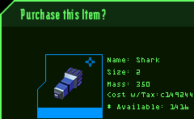

TaxationHello pilot, this is Sagrith Hubri. This is never a pleasant topic, but none the less one that needs to be discussed - taxes. Here's a basic overview of the TRI taxation system, and what it means to you as a TRI citizen. |
| Tax Percentages - How to Calculate your Payment | |||||||||||||||
|
Every purchase you make is based on two tax systems. The first is the standard TRI tax, and the second is a faction specific tax. The total of these two taxes average out to be about 1% of every purchase for commodities and 10.0% for equipment. However, this tax changes on a per-pilot basis.  Each faction calculates tax based on political rating. The exact formula is not public knowledge, but from the following examples you can estimate your tax.
|
| beacons - tax break |
|
Since beacon positional data is invaluable to TRI, tax brakes are given to each faction depending on the current number of beacons they control. For each beacon, 0.01% of a faction's overall tax is removed. (So if a faction were to control 100 beacons, pilots of that faction would not pay any tax on commodities and 9% tax on equipment.) Beacon tax breaks are calculated at the time of the sale, so it's worth checking your map before purchasing high credit items. |
| Tax Calculation Example |
|
Let's assume that you are a Solrain docked at Quantar Core Station. You have a political rating of 50 (Dedicated) with Quantar, and Solrain currently owns 25 beacons. You are trying to purchase a commodity that costs 122445 credits before tax. First calculate your tax break from beacons. Since 25 beacons are held, subtract 0.25% from the average tax, which is 1.0% for commodities and 10.0% for equipment. Your tax after beacons is 0.75%. Next calculate your political status tax modifier. Since your rating with Quantar is 50 (Dedicated), assume there will be a +1% tax change. This leaves you with a 1.75% tax. Since the initial item cost 122445, your tax will be about 2143. Your total cost should then be 124588. |